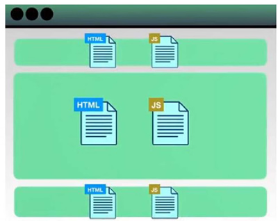

首页 > 编程笔记
Vue.js的安装（4种方式）
Vue.js 的安装有 4 种方式：
选择 CDN 后，在页面中引入 Vue 的代码如下：
用 Vue 构建大型应用时，推荐使用 NPM 安装。NPM 能很好地和诸如 Webpack 或 Browserify 模块打包器配合使用。
使用 NPM 安装 Vue.js 3.x：
例如想构建一个大型的应用，可能需要将应用分割成各自的组件和文件，如图1所示，此时便可以使用 Vue CLI 快速初始化工程。
因为初始化的工程可以使用 Vue 的单文件组件，它包含各自的 HTML、JavaScript 以及带作用域的 CSS 或者 SCSS，格式如下：
在开发环境下，利用浏览器去解析 import，在服务器端按需编译返回，完全跳过了打包这个概念，服务器随启随用。
- 使用 CDN 方式；
- 使用 NPM 方式；
- 使用命令行工具（Vue CLI）方式；
- 使用 Vite 方式。
1. 使用 CDN 方式
CDN（Content Delivery Network，内容分发网络）是构建在现有网络基础之上的智能虚拟网络，依靠部署在各地的边缘服务器，通过中心平台的负载均衡、内容分发、调度等功能模块，使用户就近获取所需的内容，降低网络堵塞，提高用户访问响应速度和命中率。CDN的关键技术主要有内容存储和分发技术。
使用 CDN 方式来安装 Vue 框架，就是选择一个提供稳定 Vue.js 链接的 CDN 服务商。选择 CDN 后，在页面中引入 Vue 的代码如下：
<script src="http://c.biancheng.net/vue@next"></script>
2. NPM
NPM 是一个 Node.js 包管理和分发工具，也是整个 Node.js 社区最流行、支持第三方模块最多的包管理器。在安装 Node.js 环境时，安装包中包含 NPM，如果安装了 Node.js，则不需要再安装 NPM。用 Vue 构建大型应用时，推荐使用 NPM 安装。NPM 能很好地和诸如 Webpack 或 Browserify 模块打包器配合使用。
使用 NPM 安装 Vue.js 3.x：
# 最新稳定版
$ npm install vue@next
npm install -g cnpm --registry=https://registry.npm.taobao.org
以后可以直接使用 cnpm 命令安装模块，代码如下：cnpm install 模块名称
注意：通常在开发 Vue.js 3.x 的前端项目时，多数情况下会使用 Vue CLI 先搭建脚手架项目，此时会自动安装 Vue 的各个模块，不需要使用 NPM 单独安装 Vue。3. 命令行工具（CLI）
Vue 提供了一个官方的脚手架（Vue CLI），使用它可以快速搭建一个应用。搭建的应用只需要几分钟的时间就可以运行起来，并带有热重载、保存时 lint 校验以及生产环境可用的构建版本。例如想构建一个大型的应用，可能需要将应用分割成各自的组件和文件，如图1所示，此时便可以使用 Vue CLI 快速初始化工程。

图1：各自的组件和文件
图1：各自的组件和文件
因为初始化的工程可以使用 Vue 的单文件组件，它包含各自的 HTML、JavaScript 以及带作用域的 CSS 或者 SCSS，格式如下：
<template>
HTML
</template>
<script>
JavaScript
</script>
<style scoped>
CSS或者SCSS
</style>
Vue CLI 工具假定用户对 Node.js 和相关构建工具有一定程度的了解。如果是初学者，建议熟悉 Vue 本身之后再使用 Vue CLI 工具。
4. 使用 Vite 方式
Vite 是 Vue 的作者尤雨溪开发的 Web 开发构建工具，它是一个基于浏览器原生 ES 模块导入的开发服务器。在开发环境下，利用浏览器去解析 import，在服务器端按需编译返回，完全跳过了打包这个概念，服务器随启随用。
关注公众号「站长严长生」，在手机上阅读所有教程，随时随地都能学习。内含一款搜索神器，免费下载全网书籍和视频。

微信扫码关注公众号